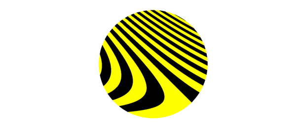
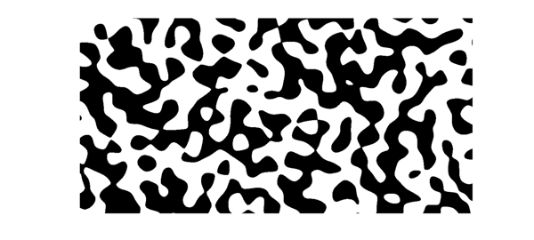
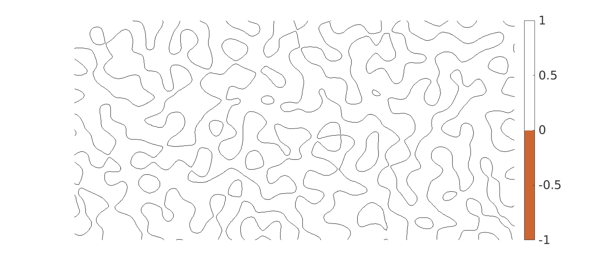

Instead of a plot showing many function values, sometime we may wish to highlight just a plus/minus distinction. For this there is the 'zebra' option in Chebfun2, Spherefun, and Diskfun.
For example, here is zebra plot of a certain function on the disk. For fun we've changed the colors from the usual black/white.
cheb.xydisk; f = sin(20*(x+y).*(1+y)); plot(f, 'zebra') colormap([1 1 0; 0 0 0]) axis off

Normally, however, the plots show zebras rather than bumblebees. Negative values are black and positive values are white. Here is an example on the sphere.
f = spherefun.sphharm(15,5); plot(f,'zebra') axis off
Here is an example on a rectangle.
f = randnfun2(.2,[-2 2 -1 1]); plot(f, 'zebra') axis equal off

It was hardly necessary to give Chebfun a zebra option, merely convenient and memorable. One can achieve the same effect same with the contourf command. Here for example is a zebra plot using a brownish-orange color. Maybe that makes it a giraffe plot.
clf, contourf(f,[0 0]) colormap([0 0 0; .8 .4 .2]) axis equal off

Contouring commands like this are quick and designed for graphical accuracy. If you want higher-accuracy resolution of boundaries (at least if they are not too complicated), you can use roots.
c = roots(f); plot(c), axis equal off